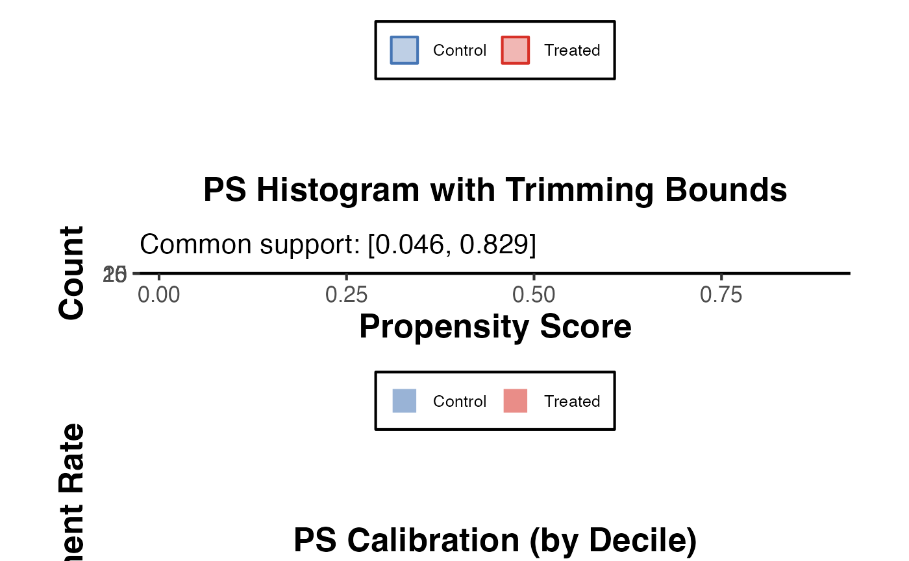

Propensity Score Diagnostics Panel
propensity_diagnostics.RdEvaluates overlap, common support, and calibration of estimated propensity scores. All three plots are returned individually and as a combined figure.
Usage
propensity_diagnostics(
ps_scores,
treatment,
data = NULL,
method = c("logit", "rf", "any"),
title = NULL
)Arguments
- ps_scores
Numeric vector of estimated propensity scores (values in (0, 1)).
- treatment
Integer or logical vector of the same length as
ps_scores. Treatment indicator (1 = treated, 0 = control).- data
Data frame or
NULL. If supplied, it is used only for labelling purposes.- method
Character. Label for the propensity score estimation method shown in plot titles (e.g.
"logit","rf"). Default"any".- title
Character or
NULL. Optional overall title prefix.
Value
A named list:
overlap_plotggplot2 density overlap plot.
histogram_plotggplot2 histogram by treatment group.
calibration_plotggplot2 calibration plot.
combined_plotPatchwork combined figure (or
overlap_plotif patchwork is unavailable).overlap_statsNamed numeric vector:
min_treated,max_control,common_support_lo,common_support_hi,pct_off_support.
Details
Comprehensive Propensity Score Diagnostics
Produces a set of diagnostic plots and statistics for evaluating a propensity score model: (1) an overlap density plot, (2) a histogram by treatment group with trimming bounds, and (3) a calibration plot comparing predicted treatment probability with observed treatment rate by decile. The three panels are assembled into a combined figure via patchwork if available.
Examples
set.seed(42)
n <- 400
x1 <- rnorm(n)
x2 <- rnorm(n)
lp <- -0.5 + 0.8 * x1 + 0.5 * x2
ps <- 1 / (1 + exp(-lp))
trt <- rbinom(n, 1, ps)
diag <- propensity_diagnostics(ps_scores = ps, treatment = trt)
diag$combined_plot

diag$overlap_stats
#> min_treated max_treated min_control max_control
#> 0.04643335 0.86449771 0.03180591 0.82869973
#> common_support_lo common_support_hi pct_off_support
#> 0.04643335 0.82869973 0.50000000